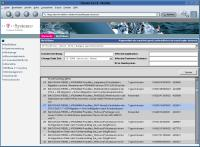
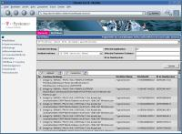
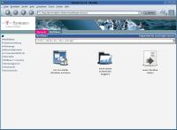
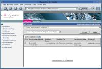
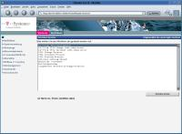
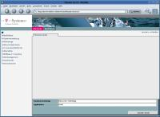
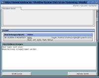
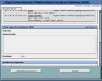
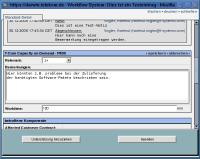
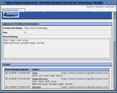

Aktuell ist es so, dass 1xtäglich alle Config-Informationen aus der W5Base/CMDB in die Datenbank von W5Base/Darwin kopiert werden, d.h. alle Informationen die in der CMDB geändert werden, stehen im P800 Report erst mit 24h Verzögerung zur Verüfung.
Derzeit ist noch nicht geklärt wie die P800 Reports an den Kunden ausgeliefert werden sollen. Es wird angestrebt, dass diese direkt in der Darwin-Oberfläche eingesehen werden können (änlich wie dies bei CoD der Fall war/ist).
Aktuell müssen die P800 Reports über den entsprechenden Menüpunkt unter MyW5Base durch den SeM abgefragt werden, und dann manuell (z.B. als Excel) an den Kunden ausgegeben werden.
Im Gegensatz zu CoD werden bei den P800 Report die Config-Daten immer aus dem aktuellen Stand verwendet, d.h. wird eine Anpassung in den Configdaten vorgenommen (z.B. SeM geändert), so bezieht sich diese Änderung der Rechte automatisch auf alle Reports - egal welcher Monat.
| 1. | Changes werden über die Seite http://qso.telekom.de beantragt (Stand 12/2006). | |
| 2. | P800 Daten des Changes werden automatisch mit Default-Werten (basierend auf den ServiceCenter Daten) in Darwin vorbelegt. Alle Changes aus ServiceCenter werden somit automatisch in Darwin sichtbar. |  |
| 3. | Nach Fertigmeldung des Changes kann die Nachbearbeitung in Darwin durchgeführt werden. Die Aktualisierung der Vorbelegung ist in der Nachbearbeitung abgeschalten. | |
Es ist absolut wichtig, dass die Anwendungsnamen bei manueller Eingabe des Changes in ServiceCenter korrekt eingetragen werden. Es ist nicht vorgesehen, dass diese Zuordnung im Nachhinein geändert werden kann, wenn der Change erst einmal abgeschlossen ist.
Alle Changes die nicht mit "Ja" gekennzeichnet wurden, werden bei der Zählung ignoriert.
Zu statistischen Zwecken wird der Change nach verschiedenen Anlässen eingestuft.
In diesem Feld werden Besonderheiten bei der Ausführung des Changes vermerkt (z.B. mangelhafte Softwarelieferung)
In diesem Zeitraum stand die Anwendung dem Kunden nicht zur Verfügung
In diesem Feld muß die Arbeitszeit für den Change incl. Vor- und Nacharbeiten festgehalten werden.
| 1. | Incidents werden im ServiceCenter eingegeben und bearbeitet | |
| 2. | P800 Daten des Incidents werden automatisch nach Abschluß des Incidents mit Default-Werten (basierend auf den ServiceCenter Daten) in Darwin vorbelegt. Alle Incidents aus ServiceCenter werden somit automatisch in Darwin sichtbar. Voraussetzung dafür ist, dass eine gültige Anwendung im Feld SoftwareID eingetragen wurde. |  |
Es ist absolut wichtig, dass die Anwendungsnamen bei manueller Eingabe des Incidents in ServiceCenter korrekt eingetragen werden. Es ist nicht vorgesehen, dass diese Zuordnung im Nachhinein geändert werden kann, wenn das Incident erst einmal abgeschlossen ist.
Es wäre sinnvoll, wenn die Felder "Work Start" und "Work End" im ServiceCenter gefüllt werden würden. Derzeit ist das in allen meinen Stichproben nicht der Fall gewesen.
Alle Incidents die nicht mit "Ja" gekennzeichnet wurden, werden bei der Zählung ignoriert.
In diesem Feld werden Besonderheiten bei der Bearbeitung des Incidents vermerkt (z.B. schlechte Zuarbeit des Kunden)
In diesem Zeitraum stand die Anwendung dem Kunden nicht zur Verfügung
In diesem Feld muß die Arbeitszeit für den Incident incl. Vor- und Nacharbeiten festgehalten werden.
Die Parameter Downtime Start/End und Arbeitszeit werden bei den Incidents rein zu statitischen Zwecken erfasst. Eine konkrete Auswertung für P800 erfolgt derzeit noch nicht.
| 1. | BTB Workflows können von jedem über "Workflow starten" unter MyW5Base initiiert werden. |  |
| 2. | Die Kurzbeschreibung des BTW Workflows kann jederzeit geändert werden (solange der Workflow noch nicht geschlossen ist). | |
| 3. | Werden Notizen an den Workflow hinzugefügt, dann sind diese weder entfernbar noch korrigierbar. Die Notizen werden auch nicht in den P800 Reports an den Kunden herausgegeben. | |
| 4. | Die laufende Bearbeitung des BTW Workflows kann nur durch den Ersteller durchgeführt werden. Es sei den, dieser hat "Unterstüzung" hinzugezogen. "Unterstützung" kann sowohl ein einzelner Mitarbeiter, als auch ein Team sein. | |
| 5. | Nach Abschluß des BTW Workflows wird dieser dem TSM der betroffenen Anwendung zugewiesen. Dieser hat dann die Möglichkeit die P800 relevanten Parameter zu überarbeiten. |  |
| Schritt 1: | Auswählen des Menuüunktes MyW5Base | |
| Schritt 2: | Neuen Workflow starten - Auswahl von AL-T-Com Betriebstagebuch |  |
| Schritt 3: | Kurzbeschreibung und betreffende Anwendung eingeben |  |
| Schritt 4: | laufende Bearbeitung des Workflows: - Notizen hinzufügen - Support hinzuziehen oder entfernen - BTB abschließen |
 |
| Schritt 5: | nach Abschluß des BTB Workflows können die P800 relevanten Parameter durch den TSM "überarbeitet" werden. Eine weitere Möglichkeit ist, dass der TSM den Workflow wieder einem Mitarbeiter zuweißt. |  |
| Schritt 6: | Die Bearbeitung der P800 Parameter kann durch klicken auf den "bearbeiten" link in der Kopfzeile des P800 Datenblockes in die Wege geleitet werden. Die Änderungen werden nur gespeichert, wenn nach den Änderungen auch der "speichern" link angeklickt wird. |  |
| Schritt 7: | Wird der Button "beenden" geklickt, so wird der Workflow entgültig beendet, d.h. es sind unwiederruflich keinerlei Änderungen mehr möglich. |  |